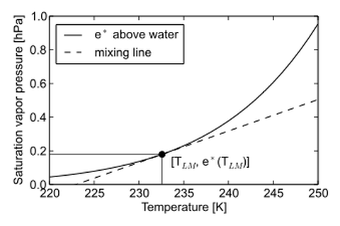
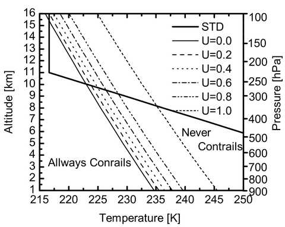
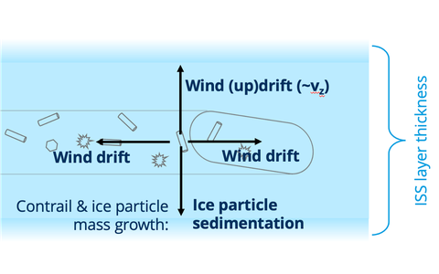
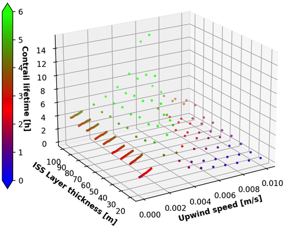
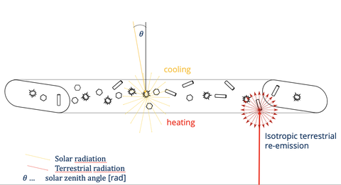
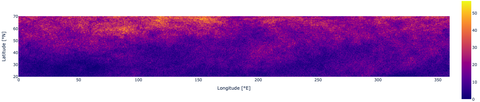

Individual Condensation Trails in Aircraft Trajectory Optimization
Contrails form behind aircraft in cold, ice-supersaturated atmospheres. They are line-shaped cirrus clouds that can both cool and warm the Earth-atmosphere system, depending on their lifetime, microphysical properties, and time and location of formation.
In the ICATO project, these conditions are investigated in detail and the findings are prepared for the integration into a simulation environment for aircraft trajectory optimization.
Contrails form due to condensation of water vapor on hydrophilic emissions (e.g., soot particles, natural condensation nuclei) from aircraft engines. For condensation to occur, the atmosphere must be very cold. The critical temperature $ T_{LM} $ is determined by the Schmidt-Appleman criterion.


For persistent contrails, the atmosphere must also be ice-supersaturated – a condition that occurs with a 30–50% probability in the Northern Hemisphere.
The lifetime depends on the thickness of the ice-supersaturated layer and prevailing wind conditions. Due to wind shear and mixing with the environment, contrails spread and can persist for several hours.


Contrails scatter incoming solar radiation (cooling effect) and absorb outgoing longwave radiation (warming effect). The dominant effect depends on the solar zenith angle, time of day, and ice crystal properties.


The results of the ICATO project are integrated into the TOMATO simulation environment to optimize sustainable flight trajectories.
Project Link: GitHub: TOMATO Simulation